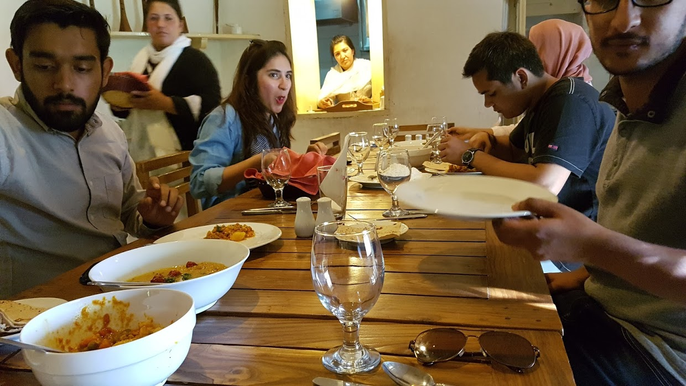

여행은 장소로 시작해서 사람으로 끝난다
2017년 05월 26일
파키스탄
나는 새벽 5시에 깨는 반면에 S와 J는 9가 넘어서도 잔다. 나는 보통 7시면 아침을 먹는데 이사람들은 10시가 되어야 아침을 먹는다. 오늘은 나도 5시 이후부터 누워서 자다깨다를 반복하여 7시 정도에 일어났다. 내가 묶는 호텔 블루문은 주방에서 요리사 가지가 무료로 물을 끓여 준다. 어제 구매한 컵에 커피가루만 넣어 가지고 주방으로 내려갔다. 가지에게 물을 받고 이야기도 했다.
가지가 Ulter 트래킹 이라는 코스를 알려줬다. 한 2시간 정도 트래킹하고 2~3시간 머물고 2시간 정도 내려오는 코스라고 한다. 재미있을것 같아서 오늘 갈 수 있냐고 했더니 가이드와 같이 가는것이 좋을것 같다고 한다. 투어회사를 통해 가이드를 구하면 비싸서 가지가 직접 구해준다고 했다. 비용은 500~600루피 정도가 될거라고 한다. 우연히 트래킹 정보를 얻게 되어 기뻤다.
어제 이슬람 문화에 더욱 많은 관심이 생긴 나는 언젠간 코란을 읽어봐야 겠다고 생각했다. 이 숙소에도 코란이 있었다. 영어 번역본이었다. 총 30권으로 나뉘어진 책중에 30번째 책이 있었다. 가지에게 코란 읽는 방법도 배웠다. 근데 코란 앞 뒷면에 어떤 한국인들이 빙고게임 낙서를 해놓은것이 보였다. 굉장히 불쾌하고 부끄러웠다. 나는 어제 초대받은 가정집에서 그 가족이 코란을 어떻게 다루는지 보았다. 코란을 가지고 이동할 때 두손으로 정성스럽게 운반한다. 코란은 무슬림에게 가장 신성시 되는 책이다. 그런책에 이따위 낙서를 하다니 분노가 치밀었다. 나는 가지에게 대신 미안하다고 했다.
어제 정말 많은 일들이 있었기 때문에 일기를 쓰는데 너무 오랜 시간이 걸렸다. 한 10시즘 콘프레이크랑 당근 오이 체리로 아침을 먹고 나서부터 쓰고 보니 1시가 넘었다. 점심시간이 되었다. 일기쓰는시간이 점점 길어지는데 살짝 걱정이 되기도 한다. 그래도 하루 직장에서 2~3시간 일하고 논다고 생각하니 괜찮기도 했다.
우리는 카리마바드의 맛집이라고 알려진 파라다이스 식당에 갔다. 음식 값이 너무 비쌌다. 전혀 기대하지 않았는데 인터넷이 된다고 해서 놀랐다. 당장 컴퓨터를 열었다. 나는 이제 핸드폰으로 WIFI를 사용할 수 없다. WIFI만 키면 폰이 계속 재부팅된다. 이제 인터넷은 노트북으로만 사용할수 밖에 없다. 내가 처한 환경대로 가진 조건대로 이렇게 살아야지 어쩌겠나.
비싼 가격에 비해 굉장히 맛없는 음식을 먹었다. 게다가 인터넷도 금방 끊어졌다. 계좌 이체 마지막 단계를 남기고 연결이 끊어져서 아무것도 한게 없다. 나는 바로 노트북을 접고 카리마바드 반대편 ALTIT마을을 구경하기로 했다. 어제 게하 옥상에서 반대편 전경을 봤는데 폭포가 있어서 꼭 가보고 싶었기 때문이다. J와 S는 게하에 있는다고 했다.
카리마바드에 와서 처음으로 가고 싶었던 폭포에 가게되니 신이 났다. 이번 여행 전체를 통틀어서 내가 한가지 배울 수 있는것이 있다. 사소한것에 아름다움을 느끼고 . 예기치 못한 상황을 즐기는 법. 그리고 인생을 재미있는 이벤트로 채우는 방법을 깨달았다. 그것은 유행, 대세, 가이드북을 최대한 따르지 않는것. 정해진 길을 약간만 벗어나는 것이다. 즉흥적으로 목적지를 정하고, 목적지에 가는 도중 약간 다른 길로 새나가 보는것이다. 그렇게 우연히 만들어진 이벤트를 즐기는것. 나는 그때 큰 행복감을 느꼈다. 앞으로 남은 인생이 이렇게 여행하는것처럼 재미있는 사건들로 가득 차면 얼마나 즐거움 삶을 살 수 있을까.
한 20분정도 걸으니 쉽게 반대편 마을로 가는 길에 도착할 수 있었다. 나는 폭포 아랫쪽이 궁금해서 밑으로 더 내려갔다. 근데 길이 제대로 나 있지 않아서 도저히 도달할 수가 없었다. 숲길로 들어가는데 계속 길을 읽었다. 인간이 만들어놓은 희미한 길을 따라 갔지만 곧 길이 끊기고 없었다. 왠만해선 어떻게든 해내고 마는 내가 이번엔 포기할 수 밖에 없었다.
마을로 들어갔다. 역시 사람들이 무표정으로 엄청나게 처다본다. 인도에서 부터 파키스탄 까지 경험 했지만 아직도 적응이 안되는 부분이다. 나는 그럴때는 민망해서 그냥 인사를 한다. 그러면 대부분 사람들은 웃으면서 HI How are you. 라고 답해준다. (하지만 오늘은 내가 인사를 안해서 그런지 생각보다 별로였다)
파키스탄에 처음 온 사람들은 수 많은 사람들이 무표정으로 쳐다보는 경험을 하면 겁에 질릴지도 모르겠다. 나도 처음엔 그랬다. 하지만 점점 이 사람들을 알게 되면서 그것은 적대적인 반응이 아니라는 사실을 알게 되었다. 그들이 처다보는 이유는 단지 이방인이 신기하고 궁금해서일 뿐이다.
나는 그 사이에 파키스탄 사람들과 친해지는 방법을 하나 깨달았다. 어딘가 잠시 머물때 옆에있는 파키스탄이 처다보면 인사하는것이다. 그러면 대화가 시작되고 무조건 친구가 될 수 있다. 낫선 이방인으로 현지인과 가까워지기 위해서는 미소와 인사 딱 두개만 있으면 된다.
Alter fort 1100년전 성을 들어가려고 했다. 가격이 800루피라고 한다. 건물에 별 관심이 없기도 하고 그정도 가격을 지불할 가치를 못느껴서 돌아가려고 했다. 근데 포트로 가는 길이 예뻐서 길만 잠깐 구경하고 나가면 안되겠냐고 물어봤더니 알겠다고 한다.
예쁜길을 따라 들어가니 까페가 있었다. 이름은 Kha Basi Cafe. 까페에는 훈자에 여행 온 파키스탄 대학생 그룹이 있었다. (훈자에는 외국인 여행객보다 파키스탄 여행자가 더 많다) 주변 경치가 너무 예뻐서 서서 구경하다가 까페에 들어갔다. 역시 까페에 들어갔는데 사람들이 무표정으로 처다본다. 한 그룹에게 인사를 했다.
그렇게 그 대학생 친구들과 대화가 또 시작되었고, 그들에게 식사랑 짜이도 얻어먹게 되었다. 이 그룹은 비즈니스 스쿨이라고 한다. 그 중에 ALI 라는 친구랑 대화를 많이 했는데 패밀리 비즈니스와 개인 여행 회사를 운영하고 있다고 한다. 그래서 여행정보를 많이 알고 있었다. 내 여행 계획에 대해서도 약간의 도움을 받을 수 있었다.
결국 여행은 장소로 시작해서 사람으로 끝난다. 파키스탄은 이런곳이다. 이들과의 즐거운 시간을 보낸 뒤 나는 폭포를 구경하러 이동했다.
까페 주변 경치

같이 식사를 했던 대학생들. 맨 오른쪽이 ALI

까페가 고급스러웠고, 이 친구들에게 매우 고급진 식사를 얻어먹었다.
아침과 같이 폭포를 찾아서 이동했다. 지나가던 오토바이를 멈추고 폭포가는 길이 맞는지 물었는데 아니라고 한다. 근데 내 생각에는 분명 이 길이 맞는것 같아서 오토바이 뒤에타고 조금 더 갔다. 계속 가는데 이 친구 말대로 길을 잘못들어서 좁은 골목으로 들어가게 되었다. 그리고 곧 길을 잃었다. 한참을 헤메다가 어떤 아저씨가 보여서 길을 물어봤더니 직접 도로 까지 안내해 주셨다. ㅜ 감동. 마침내 폭포 발견하고 곧 숙소로 돌아올 수 있었다.
수많은 정보들을 가지고 여행에 온다. 막상 여행에 오면 그 정보들의 절반은 무용지물이다. 인터넷으로 본 여행지와 직접 경험하는 여행지의 모습은 굉장한 차이가 있는것 같다. 최소한의 정보만 가지고 부딪혀 보는것이 훨씬 좋은 방법이다. 그러면 어떻게든 된다. 결국 사람들의 도움을 받게 된다. 한국인이든 외국인 여행자이든 현지인이든.
결국 만난 폭포의 모습